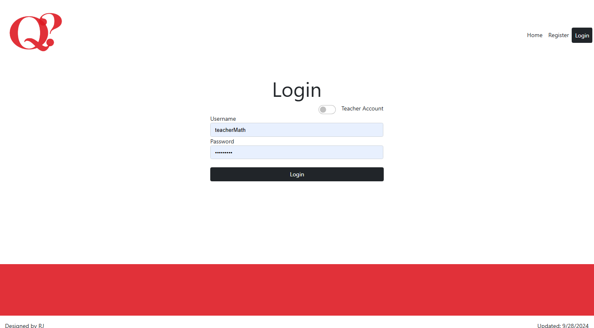

Design Documents
This section includes visual representations of the project's architecture, such as wireframes, flowcharts, and system diagrams. These diagrams help illustrate the structure of the application, the flow of data, and the user experience, providing a clearer understanding of how the different components interact.
Wire Frames
Overall Look and Feel - Home Page

I wanted to make sure the application is super easy to use for everyone. The design is all about keeping things simple but still looking good, using bright colors to help users with disabilities. By focusing on both looks and usability, the application is all about creating a welcoming experience for everyone. Additionally, I wanted predictability so users can easily guess where a link, button or page will lead them or what it would do.
Login Page For All Users
Registration Page For All Users
My Account for Students
My Account For Teachers

Take a Test for Students
Add Class Modal For Students

Add Class Modal For Teachers

Update Account Information - for all users
Student's 'Take a Test'
Teacher Test Creation Process
Step 1: Create Test Modal

Step 2: Update Test Page

Update/Edit Tests